What if Salem became
the most liveable city
in America?
It is a large question for a modest city, and we cannot answer it alone. This plan is written in questions on purpose: the answers belong to the people it names.
A neighborhood that is
a product of Denmark
Now City is building a North American platform for neighborhood-scale regenerative development, and West Salem is its demonstration district. The idea this plan tests is simple to say: a Now City neighborhood as a product of Denmark, the way a great piece of Danish design carries its origin as a mark of quality. Danish architecture, engineering, energy, water, mobility, and urban design, working together inside one commercially replicable American neighborhood.
Denmark has spent two decades building institutions whose purpose is connecting Danish urban expertise to the world: the Trade Council and its Sustainable Urban Development advisory, State of Green, the Danish Architecture Center, the Danish Design Center, DenmarkBridge. A consortium assembled around one American district is precisely the shape those platforms exist to support. His Majesty King Frederik X holds patronages across these exact institutions; that alignment is handled with care throughout this plan: recognition is earned through the institutions, never sought as endorsement.
Liveability is a method
The question sounds immodest, so we hold it carefully. Salem is Oregon's capital, a city of nearly two hundred thousand on the Willamette River, an hour south of Portland. It has the raw material liveability is made from: a walkable core, a riverfront, universities, state government, and land that can still be shaped. What it has never had is a method.
Liveability is measured in ordinary days: a home you can afford near the things you love, trips that do not require a car, streets that hold public life, buildings that keep you healthy, nature that works as infrastructure, culture and play within walking distance. The cities that top the global liveability indexes score on exactly these things, and Copenhagen sits at or near the top year after year. That is not luck. It is a method, refined over fifty years and carried by a national ecosystem of designers, engineers, builders, investors, and public institutions. We do not claim that method. We hope to borrow it honestly, adapt it openly, and give back what we learn.
What Denmark's method has never had in America is the unit of proof that changes minds at scale: not a product, not a building, but a whole district, designed as one system.
Three moves, one handshake
If the partnership works, it will be because of one clean separation. We drew it sharply so it is easy to correct.
Move 1
Denmark backs the product
The Danish District as a product: an integrated, exportable package of architecture, energy, water, envelopes, daylight, mobility, public realm, standards, and supply chain, engineered to American codes and costs. The coalition develops it. Danish support flows to product development, where Danish upside lives: industry product budgets, foundation missions, export-finance instruments, and the platform institutions doing what they were built to do.
Move 2
America funds the project
Edgewater capitalizes as an American real estate project, on its own track, from American and international sources: platform capital, the district fund, and phase capitalizations. The district proceeds on its own strength. Danish partners are invited into a project that is already moving, never asked to carry it.
Move 3
The project buys the product
Procurement is the bridge. Phase One specifies Danish systems where they win on merit and purchases them at market: the demonstration is a paid installation, not a subsidized one. Every district that follows re-buys the product, and the product improves with every purchase. A channel, not a charity.
Where working in questions has worked
Working in open questions is not a soft way to plan. Done seriously, it is how some of the most admired transformations of the last forty years were actually run. Four we study, and what each teaches this plan:
Ruhr Valley, Germany · 1989-1999
IBA Emscher Park
A declining industrial region posed guiding questions instead of a masterplan, then invited the world to answer with built work: seventeen cities, some 120 projects, roughly EUR 2.5 billion, an 800 square kilometer landscape park. Guided incrementalism, not command planning, turned the Ruhr into a global reference.
A region can be transformed by well-posed questions and a decade of disciplined answers.
Chile and beyond · 2004-present
Elemental's half of a good house
Aravena's studio built the expensive, difficult half of a good house and left the rest, deliberately, for families to finish. More than 2,500 homes later, with values that tripled at Quinta Monroy and the plans released open-source, it is built proof that leaving the right things unfinished is a form of respect.
This plan builds the frame and leaves the finishing to the people who will live in it.
Brooklyn Navy Yard, New York · 2016-present
Newlab
A coalition, not a developer, turned a historic shipyard building into a working home for hundreds of applied-technology ventures. It is the model Edgewater's innovation district already cites, and proof that a place plus a shared question attracts better partners than a lease ever will.
The lab comes first; the ecosystem assembles around it.
Copenhagen · 2002-2018
MindLab
The Danish state's own innovation lab, the world's first, put citizens and businesses inside the design of public solutions for sixteen years and became the template governments worldwide copied. Co-design is not something Danish practice imports; it is Danish practice.
The coalition's working method should be as Danish as its products.
Twenty-seven seconds over the district
The innovation district builds the product
Every product needs a place where it is developed, tested, and shown. This one needs two, one on each shore, and standing them up is the strategy's first move.
In Salem: the Edgewater innovation district. The district's plan already carries an innovation district in the Newlab lineage: applied research and enterprise working inside a real neighborhood. In this partnership it becomes the American home of the Danish District product effort: the adaptation lab where Danish systems meet US codes, costs, and construction culture; the landing pad where Danish companies and SMEs get an American address, a demonstration block, and their first reference customers; and the measurement engine that instruments the district and publishes what the systems actually do.
In Copenhagen: BLOXHUB. The mirror room: six hundred members organized around sustainable urbanization, two of this coalition's people in its leadership, and the natural host for convenings, studio sessions, and member calls against district challenges.
One product lab, two rooms, one agenda. Whether that is the right shape is the first question for the first convening.


How might a plan like this be held?
How might a plan like this be held? Not, we suspect, by a committee, and not by us alone.
The most honest sentence in this document: we do not yet know the right shape for its leadership, and the plan needs that answer more than it needs anything else. Our working hunch is a small team spanning both shores: Now City holding the American side, and on the Danish side, people who have delivered complex civic work inside Danish institutions and who understand how transit, land, and daily life bind into one plan. But the people who could hold this will see its shape more clearly than we can.
What Now City holds
A fair question from any Danish partner: what does Now City actually hold? The honest inventory.
Now City is master developer of Edgewater: twenty-two riverfront acres under agreement, a committed first-phase partnership, an entitlement path, and a four-phase plan across roughly a decade. That position is what makes the district a credible first customer, and it does not depend on this partnership. What follows does not scale without Danish partners; the dependence is mutual and deliberate.
Six levers, all real. Procurement is the one that buys the product; the Danish coalition plugs into all six without having to own any of them. Salem proves the product at district scale, and the playbook, supplier consortium, and measured results then travel to the next Now City district, where the product is bought again at version two. Neither side scales without the other. That is what makes it durable.
Four acts, starting with listening
A first sketch of sequence. The dates are guesses; the sequence is the commitment; only the first step is certain.
Listen and reframe
Now through spring 2027. This plan goes through the people in it: working sessions where it is taken apart and rebuilt by the coalition itself. Alongside: the Trade Council conversation, a first Danish working visit to Salem, a first convening at BLOXHUB. Act I succeeds when a dozen people have made this plan partly theirs.
The design year
2027. The product takes shape against a real site: masterplan review, city-nature strategy, the whole-life carbon standard, system selection, and the mobility strategy for the district's center. Delegations cross in both directions. The year closes with the work exhibited in both cities and Phase One carrying the product's first order.
The demonstration
2028 through 2031. Phase One is built and the product delivered: Danish systems installed together, measured together, published together. Study tours run while the cranes are still up. The district becomes the American reference case Danish industry has never had.
Replication
2031 onward. The playbook, supplier consortium, and standards travel to the next Now City district. The partnership matures into something Denmark's official trade-promotion platform could recognize as its own; a royal business delegation or project visit becomes appropriate to explore, through the patron institutions, at their initiative.
The coalition, sketched by hand
A live whiteboard of every person, organization, and connection in this plan. Click through and move the pieces; your arrangement saves in your browser. It is meant to be redrawn.
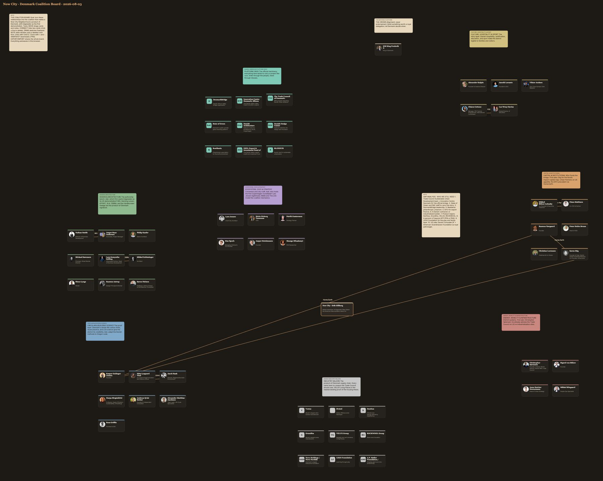
Eight questions we cannot answer alone
For each workstream: what we have noticed and the questions on the table. For each organization: an observation, an open question, and a small first step. For each person: a question we believe only they can answer. Nothing here is a role. Everything here can be reframed by the person it names.
What if Denmark's institutions had a district in America?
Denmark built these institutions to connect its urban expertise with the world, and they are good at it. What none of them has yet had is a whole American district to point to, walk through, and measure. We do not know what they would want such a district to be. That is the first thing to find out.
DenmarkBridge
Danish industry and foundations built it to connect Danish companies with American innovation, and it holds board-level reach into most of the majors on this page.
How might the bridge carry district-scale urbanism, and not only technology?
A first step One board-level introduction, chosen together.
Innovation Centre Denmark, Silicon Valley
The Danish state's official front door to the US West Coast, two hours from Oregon by air, sending delegations up and down the coast every season.
How might that front door open onto a district its delegations can actually walk?
A first step Salem added to a single delegation itinerary, as an experiment.
The Trade Council of Denmark: Sustainable Urban Development
Its Sustainable Urban Development advisory exists to connect Danish urban expertise with American developers, municipalities, and capital, and Christopher Sørensen on this map already advises it.
How might a whole district, rather than a project list, become the program's American showcase?
A first step A working conversation with the SUD advisory, introduced from inside.
State of Green
It exists to show Danish climate and urban solutions working in the world, and its library has no American district in it yet.
How might Salem become a story State of Green would want to tell?
A first step A case conversation once the coalition has taken shape.
Danish Architecture Center
Its exhibitions turn projects into public conversations, and it has royal patronage in common with most of the institutions on this page.
How might an Oregon district earn a room at BLOX?
A first step A studio visit the next time we are in Copenhagen.
Danish Design Center
The state's design center works through mission-driven design methods, and the chair of the adjacent Danish Design Council is on this roster.
How might Danish design methods shape an American civic program from its first sketch?
A first step One design sprint, run together, on a real district question.
Realdania
Decades of catalytic philanthropy changed what Danish cities dare to build; nothing quite like it exists in American development.
How might that craft inform the civic layer of an American district?
A first step A knowledge exchange, and nothing more, until it earns more.
EIFO: Export & Investment Fund of Denmark
Denmark's state fund for export finance already backs Home.Earth, so the thesis behind this plan is not foreign to it.
How might export finance follow Danish systems onto an American site?
A first step A technical conversation about instruments, once procurement is real.
BLOXHUB
600+ members organized around sustainable urbanization, with two people from this roster in its leadership. Ecosystems need live projects the way projects need ecosystems.
How might the Danish side of this coalition find its natural home?
A first step One convening at BLOX, co-hosted by the members who already know the room.
What if Danish standards underwrote an American district?
The district's American capitalization runs on its own track, so this workstream is free to be about something more interesting than money: what a people-and-planet-positive district must measure, how urban platforms stay well governed, and what European institutional capital would need to see before a future phase, or a future district, became interesting. We have guesses. The people below have knowledge.

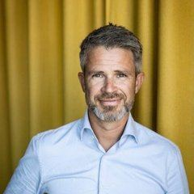
Mikkel Bülow-Lehnsby
You turned a five-person startup into a EUR 21B urban platform. What did you know by year three that we should know now? And what would a district in Oregon have to become before it deserved Urban Partners' attention?
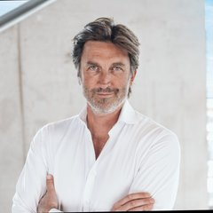
Claus Mathisen
You run investment strategies built around urban problem solving. Which problems in this plan look investable to you, and which look naive?
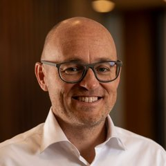
Rasmus Nørgaard
Home.Earth and Now City hold the same conviction on two continents: homes within planetary boundaries. What should two companies like that actually share: metrics, mistakes, capital, or something we have not thought of?
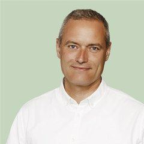
Peter Hebin Bruun
You hold Denmark's largest pension fund's real estate to its ESG bar. If you audited this district on day one, where would we fall short, and which shortfall matters most?
Christian Lorenzen
You have spent a career between Danish design houses and private capital. Where does Danish design create value in America that Americans do not yet see?
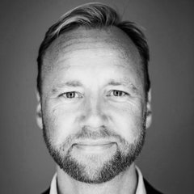
Søren Stig
You sit at the center of Nordic impact capital. What would this story need to become before you would put it in front of the network you built?
What if the next great Danish district stood in Oregon?
Danish studios have earned their reputations building the references this plan keeps citing. We hold a site, a program, and the American delivery apparatus; what a Danish-American design collaboration should actually look like, we would rather discover in a studio than dictate in a document.

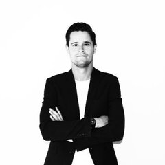
Nathan Smith
You have carried Danish architecture into twenty countries. What makes a client worth BIG's time, and what could make a mid-sized capital city interesting rather than merely small?
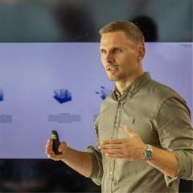
Jesper Boye Andersen
You carried CopenHill from drawings to a ski slope on a power plant. What does a plan like ours always underestimate?
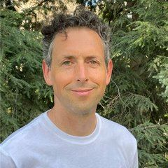
Philip Kaefer
You translate design intent into means of construction. Which Danish facade ambitions survive American construction culture intact, and which need reinventing?
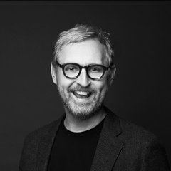
Michael Sørensen
You deliver Danish architecture from a New York base. What do Danish firms get wrong about America, and what does America get wrong about Danish firms?
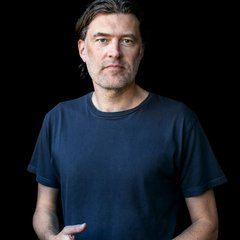
Lars Gemynthe Gylling
CEBRA's schools and civic buildings shape how children meet the world. What would you ask of a city that says it wants to be the most liveable in its country?
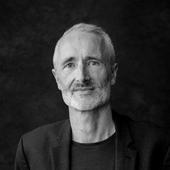
Mikkel Schlesinger
You work across CEBRA's international studio. Where have you seen Danish design adapt best outside Denmark, and what made it work?
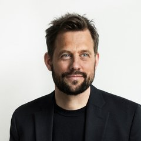
Sinus Lynge
Living Places proved healthy, ultra-low-carbon homes at market cost in Copenhagen. What breaks when that ambition crosses the Atlantic, and what gets easier?
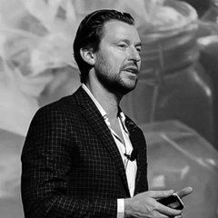
Rasmus Astrup
You use nature as urban infrastructure. Standing on our riverfront for an hour, what would you see that we cannot?
Søren Nielsen
You argue buildings should be designed for disassembly. If a whole district took that seriously from day one, what would change first: the architecture, the economics, or the contracts?
What if whole-life carbon crossed the Atlantic?
Denmark wrote whole-life carbon limits into a national building code, a world first, built on methods the people below created and run. Nobody has held an American district to that discipline. We do not know what survives contact with US materials, codes, and costs, and neither, we suspect, do they. That is what makes it worth doing.

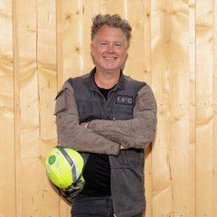
Kasper Guldager Jensen
You believe the most sustainable square meter is the one not built. Our site carries existing structures; what would you keep that a developer would demolish?
Ditte Lysgaard Vind
You lead innovation at BLOXHUB and chair the Danish Design Council. What would make an American district a project the Danish design world claims as its own?
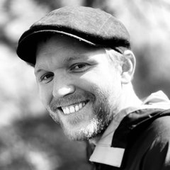
Jacob Rask
You brought the doughnut to Copenhagen. What would a Salem doughnut need to be honest rather than decorative?
Harpa Birgisdóttir
Your science sits behind the world's first whole-life carbon limits in a building code. What would it take to run that science on an American district, and what result would surprise you?
Andreas Qvist Secher
You turn urban ambition into certifiable criteria. Which of our ambitions would fail an assessment today, and which failures should we welcome learning about?
Alexander Matthias Jacobson
Your team turns investors' sustainability ambitions into measurable design criteria. What should a district measure from day one that almost none do?
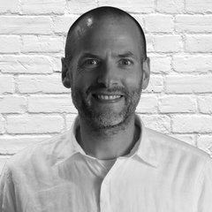
Ross Griffin
You manage cost and carbon in one model. Where have you watched the green premium argument actually die, and what killed it?
What if energy, water, and mobility were one system?
Districts usually procure energy, water, and mobility as parts from separate catalogs. Copenhagen's deepest trick is treating them as one system, and treating transit as a maker of neighborhoods rather than a mover of vehicles. Our site has a river between it and its own downtown. We think that is the workstream's central puzzle; the people below may see a different one.

Christopher Sørensen
You built GreenLab from an aspiration into a national research facility, and now advise the Trade Council on American sites. From where you sit, what would make Salem a serious answer rather than a nice story?
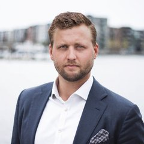
Sigurd von Bülow
You are building the infrastructure of air mobility. What should a district do today so it does not regret it in fifteen years?
Anne Katrine Hornemann
You built a 40,000 square meter piece of city above a metro station and now lead the Copenhagen Metro's urban strategy. When you look at a river separating a neighborhood from its own downtown, what questions do you ask first? And what does a plan like this one always get backwards about mobility?
Mikkel Riisgaard
You are inside Denmark's renewable energy world and its youngest generation. What does that generation want from a project like this that we might not think to offer?
What if the coalition itself were designed?
Most coalitions fail quietly, from craft rather than intent. The people in this group have built civic infrastructure, government innovation labs, second-city ecosystems, and cross-border networks; they know how these things actually start, which is precisely the knowledge this plan lacks. This page is one hypothesis. The workshop where they take it apart would be worth more.

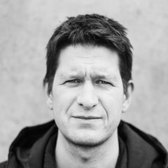
Lars Jensen
You guard architectural quality for Copenhagen and spent fifteen years inside Nordhavn. What did Nordhavn learn too late that a new district could learn early?
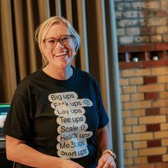
Mette Hoberg Tønnesen
You build startup ecosystems for a second city and once practiced economic diplomacy for Denmark. What makes second-city coalitions succeed where capital-city logic fails?
Patrik Gustavsson
You delivered CopenHill, co-founded MindLab, and now hold strategy across thirteen federations. You have watched more coalitions form, and fail, than anyone on this map. What does this plan get wrong about how these things actually begin? And if the beginning were yours to design, where would you start?
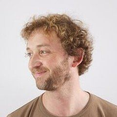
Maz Spork
You have connected corporates and startups across the Nordics since before we met in 2011. Who is missing from this map?
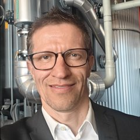
Jasper Steinhausen
You help manufacturing SMEs turn sustainability into competitive advantage. What would a Danish SME need to hear before betting on an American district?
Masego Mbaakanyi
You study how research becomes enterprise. What would make a district a place spinouts actually want to land, rather than a place that merely says it welcomes them?
What if liveability were measured in joy?
Joy is the part of liveability that never fits in a spreadsheet, and it is arguably the part Denmark does best: the hotel that feels like someone's home, the meal worth crossing a bridge for, the sport culture that gets everyone outside. We can build the rooms. What fills them is a different craft.

Alexander Kølpin
You turned Danish seaside hotels into places people cross oceans for. What is the difference between hospitality that is Danish and hospitality that is merely nice?
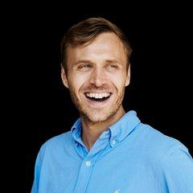
Jannik Lawaetz
You grew a Copenhagen startup into a global city network. What makes a place a destination people route their trips around?
Viktor Axelsen
You carried Danish sport to the top of the world. What would make an American district somewhere Danish sport culture genuinely wanted to show up?
Chiara Cottone
You certify sustainable hospitality across dozens of countries. Where is the line between certification that changes behavior and certification that decorates it?
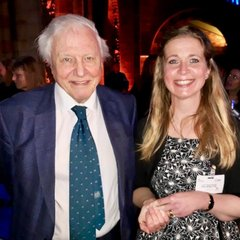
Lee Wray-Davies
You lead environmental education across a hundred countries. If a whole district were a school, what would its first lesson be?
What if Danish industry had an American flagship?
Danish industry sells into America piecemeal: a heat pump here, an envelope there. The catalog has never been installed in one place, measured together, and published. Whether that is worth doing, and what it would take to be worth doing, is a question for the makers, not the buyer. We can offer the place.

Vestas
Aarhus-based, manufacturing in America, with a deep stake in how Danish energy is understood there.
How might a district that runs visibly on clean power serve wind's American story?
A first step An introduction through the energy connectors on this map.
Ørsted
The offshore leader's American pipeline depends on public trust that is built street by street, not turbine by turbine.
How might a liveable district and an energy major tell one story instead of two?
A first step A narrative conversation, brokered by the wind-industry connectors here.
Danfoss
Heat pumps, controls, and thermal engineering are the quiet machinery of every low-carbon district, and Danfoss is expanding its American manufacturing.
How might one district become the reference installation for Danish thermal engineering in America?
A first step A systems conversation inside the design year.
Grundfos
Foundation-owned water leadership, and a district with a river on one side and a stormwater problem on the other.
How might Danish water thinking show what it does at neighborhood scale?
A first step A water strategy session on the actual site plan.
VELUX Group
Living Places Copenhagen proved ultra-low-carbon, healthy homes at market cost. It is the closest built answer to the question this district is asking.
How might Living Places' lessons shape an American block?
A first step A visit to Living Places with our design team, notebook out.
ROCKWOOL Group
US factories, and envelopes built for exactly the dense, fire-safe, high-performance urbanism this district intends.
How might Danish envelopes make Passive House performance ordinary in Oregon?
A first step A specification conversation inside the whole-life carbon work.
Novo Holdings / Novo Nordisk Foundation
Denmark's deepest pool of mission-directed capital, investing from life science outward into quality of life. This district's health thesis, centered on women and families, speaks that language.
How might a district built around family health become interesting to missions Novo already funds?
A first step A conversation once the wellness institute concept has matured.
LEGO Foundation
An owner-foundation with a global mandate for learning through play, and a district that intends play as infrastructure rather than decoration.
How might a whole neighborhood be designed as a place to learn through play?
A first step One workshop with our public realm designers.
A.P. Møller Foundation / Maersk
A product-of-Denmark district is, among other things, a logistics question, and the A.P. Møller Foundation's civic gifts set the grandest precedent of Danish-American generosity.
How might a Danish supply chain actually move, from factory to Oregon street?
A first step A logistics conversation before Phase One procurement locks.
The national horizon
If the questions in this plan find their answers, they add up to something Denmark itself can be proud of: a nationally significant Danish-American partnership, carried by the institutions built for it. Whether it ever earns that standing is not ours to declare. The one question this plan does not ask is for endorsement: His Majesty's patronages span the exact institutions the plan works through, and if the work earns recognition, it will arrive through them, at their initiative, at a milestone worth marking. Until then, the plan's job is to be worth it.
HM King Frederik X
Bring us a
better question.
This plan was written in questions because the answers belong to the people it names. Bring us a sharper question, a corrected role, or a reason the model is wrong: each one makes the plan better, and makes it more yours. The roster lives on the coalition page, the working map on the board, and the district itself at nowcity.co/west-salem.